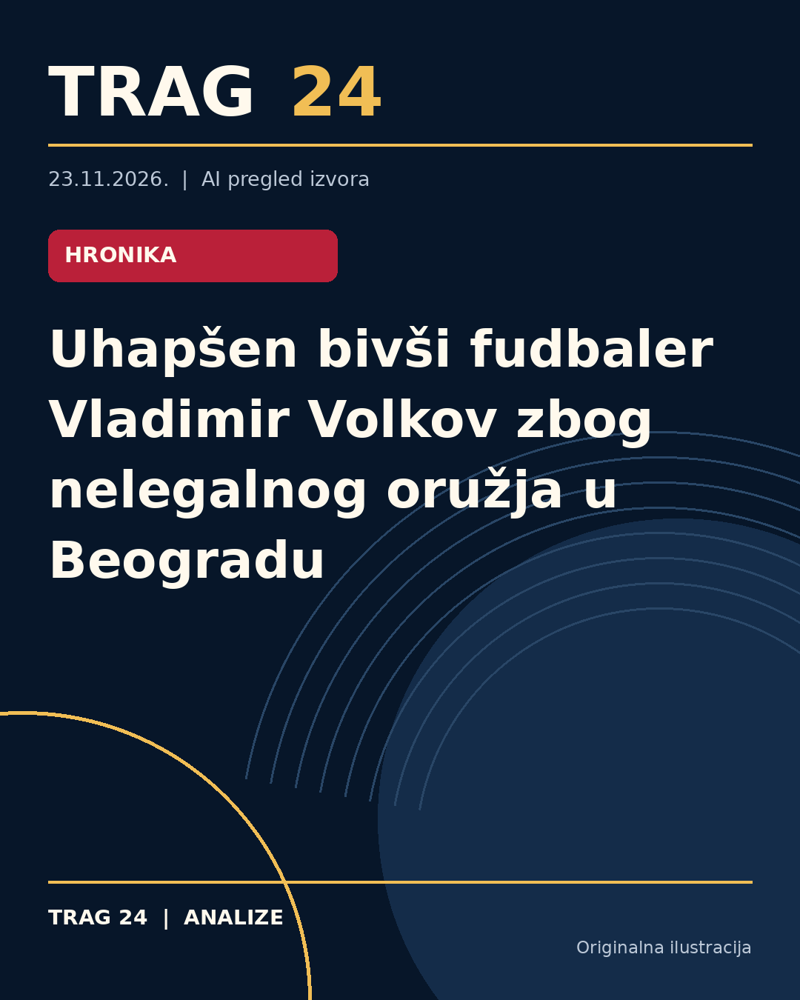

Uhapšen bivši fudbaler Vladimir Volkov zbog nelegalnog oružja u Beogradu

ŠTA SE DOGODILO
Bivši fudbaler Vladimir Volkov priveden je u Beogradu nakon što je u njegovom vozilu pronađeno nelegalno oružje. Uz njega, uhapšena je jedna ženska osoba, dok se za trećim licem koje je upravljalo vozilom još uvek traga. Policija je zaplenila pištolj sa izbrušenim serijskim brojem i okvirom sa 11 metaka, sakriven u torbici iza vozačevog sedišta.
HRONOLOGIJA
Privođenje je obavljeno u nedelju u Dunavskoj ulici, kada je policijska interventna jedinica zaustavila BMW u kome su se nalazile tri osobe - Vladimir Volkov na mestu suvozača, devojka na zadnjem sedištu i muškarac koji je vozio vozilo. Postupajući tužilac prvobitno nije odredio zadržavanje, ali je glavni javni tužilac Višeg javnog tužilaštva u Beogradu izdao obavezno uputstvo o hapšenju trojice osumnjičenih, nakon čega su zadržani Volkov i ženska osoba, dok se treći traga.
ŠTA NAVODE IZVORI
Svi izvori zajednički navode da je kod osumnjičenih nađeno nelegalno oružje sa izbrušenim serijskim brojem i municijom. Takođe potvrđuju da Volkov nije bio za volanom u trenutku kontrole policije. Izvori podsećaju na Volkovu sportsku karijeru u više fudbalskih klubova, uključujući Partizan i Rad.
ŠTA JE POTVRĐENO
Potvrđeno je hapšenje Vladimira Volkova i jedne žene, kao i potraga za trećim osumnjičenim koji je upravljao automobilom. Zaplenjeno je oružje koje je nađeno u vozilu. Zadržavanje osumnjičenih trajaće do 48 sati po nalogu Višeg javnog tužilaštva u Beogradu.
ŠTA NIJE POTVRĐENO
Nema potvrda o nameri ili motivu posedovanja oružja, kao ni detalji o identitetu tragaoca. Takođe nije utvrđeno da li su osumnjičeni koristili oružje ili su umešani u druge aktivnosti povezane sa njim.
ŠTA OSTАJE OTVORENO: Ostaje nepoznato kako je oružje dospelo u vozilo i kakva je uloga svakog od uhapšenih u ovom slučaju. Takođe nije poznato kada će Više javno tužilaštvo doneti odluku o daljim merama u predmetu.
Izvori
- https://nova.rs/sport/fudbal/uhapsen-vladimir-volkov/
- https://www.b92.net/info/hronika/287515/bivsi-fudbaler-vladimir-volkov-uhapsen-po-nalogu-vjt/vest
- https://www.espreso.co.rs/vesti/hronika/1631404/uhapsen-vladimir-volkov
Ova analiza je pripremljena uz pomoć veštačke inteligencije na osnovu javno dostupnih izvora. Navodi izvora nisu nužno nezavisno potvrđeni.